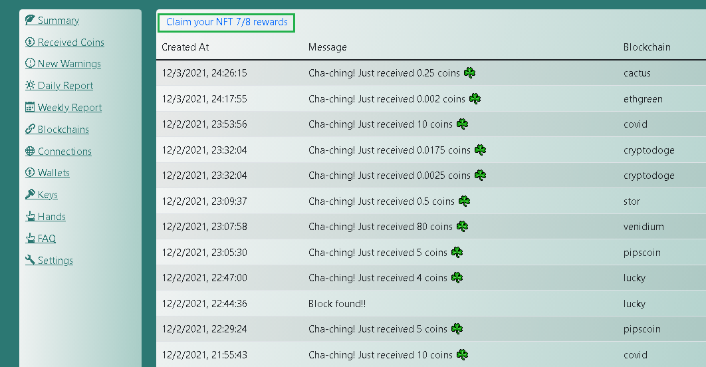

Coctohug - Pamahalaan ang dose-dosenang chia blockchain forks mining mula sa isang web browser!
- Magandang lokalisasyon na may suporta ng dose-dosenang mga wika: English, العربية, Bulgarian, Catalan, Deutsch, Español, زبان فارسی, Français, Galego, Indonesian, Italiano, 日本語, 한국어, Português do Brasil, limba română, Русский, Serbian, Thai, Tagalog (Filipino), Türkçe, Українська, Vietnamese, 简体中文, 繁體中文
Madaling paggamit ng Setup Mabilis na Pagsisimula
Humingi ng higit pang tulong sa aming Website / Github / Discussions / Discord.
Mabilis na Pagsisimula
Mga Karaniwang Setting
Mga Advanced na Setting
Pinakamahusay na kasanayan
I-setup ang Coctohug sa Linux OS
- Setup Docker + Docker-Compose
- Pumunta sa site https://www.coctohug.xyz, pagkatapos ay ilagay ang lahat ng kinakailangang mga patlang ng form at i-download ang nabuong mga naka-zip na docker-compose na mga file
- I-unzip ang mga na-download na folder at kopyahin ang mga ito sa iyong gumaganang direktoryo
- Patakbuhin ang lahat ng mga folder ayon sa pagkakasunud-sunod:
cd coctohug0 && docker-compose up -d
cd ../coctohug1 && docker-compose up -d
cd ../coctohug2 && docker-compose up -d
cd ../coctohug3 && docker-compose up -d
...
- Buksan ang browser at i-access ang WebUI gamit ang url http://localhost:12630/
- Tandaan 1: Huwag simulan ang higit sa 5 blockchain forks nang sabay-sabay, dahil ang chia blockchain forks ay talagang kumakain ng CPU kapag ang node ay nagsi-sync sa unang pagkakataon
- Tandaan 2: Humigit-kumulang 1.8G RAM ang kinakailangan para sa bawat blockchain fork, kaya pumili ng ilang blockchain forks batay sa memorya ng iyong computer
- Tandaan 3: Kung mayroong anumang mga isyu, maaaring kailanganin mong muling patakbuhin ang lahat ng mga folder ayon sa pagkakasunud-sunod:
cd coctohug0 && docker-compose up -d
cd ../coctohug1 && docker-compose up -d
cd ../coctohug2 && docker-compose up -d
cd ../coctohug3 && docker-compose up -d
...
- Tandaan 4: Maaaring kailanganin mong magdagdag ng pagpapahintulot sa mga port mula 12630 hanggang 12700 sa iyong mga setting ng firewall ng system
I-setup ang Coctohug sa Windows OS
I-setup ang Coctohug sa Mac OS
Password
- Ipo-prompt kang magtakda ng password para sa mga secure na setting, kapag unang beses mong na-access ang WebUI gamit ang url http://localhost:12630/
- Kasama sa mga secure na setting ang: Cold Wallet, Coin Transfer, I-restart ang Blockchain Forks, Harvester...
Mga susi
- Magiging maagap kang ipasok ang 24 na mnemonic na salita, kapag unang beses mong na-access ang WebUI gamit ang url - ito ay pangunahin para sa layunin ng pagsasaka
- O maaari kang bumuo ng isang ganap na bagong key - ito ay pangunahin para sa layunin ng malamig na pitaka
Pagmimina
- Kapag tapos na ang node sync, dapat na awtomatikong magsimula ang pagsasaka
- Pagkatapos ay masusubaybayan mo ang katayuan ng pagmimina sa iba't ibang paraan

Pagsubaybay
- Maaaring magpakita ang tab ng Buod: Kabuuang Mined Coins, Balanse ng Account, Bilang ng Plot, Laki ng Plot, Sukat ng Netspace at Inaasahang Oras para Manalo
- bawat blockchain fork-panel sa tab na Buod ay magkakaroon ng mapusyaw na berdeng background kung ito ay gumagana nang maayos, kung hindi, ito ay magiging mapusyaw na dilaw na background
- Maaari mo ring suriin ang detalye gamit ang iba pang mga tab
Pagbawi ng NFT
Natagpuan ang mga bloke / Natanggap na mga barya
- Ilista ang kabuuang mga bloke na natagpuan
- Ilista ang kabuuang mga barya na natanggap

Mga Babala sa Pagmimina
- Ilista ang posibleng isyu sa network
- Ilista ang posibleng isyu ng signapoint
- Ilista ang posibleng isyu sa paghahanap sa disk
- Ilista ang posibleng pagbabawas ng bilang ng plot na isyu
Pang-araw-araw na Ulat
- Ibuod ang Mga Nahanap na Block / Mga Barya na Natanggap ayon sa araw
- Ibuod ang Mga Babala sa Pagmimina ayon sa araw

Lingguhang ulat
- Ibuod ang Mga Block na Nahanap / Mga Barya na Natanggap ayon sa linggo
- Ibuod ang Mga Babala sa Pagmimina ayon sa linggo
Node Sync
Pamamahala ng Koneksyon
- Ilista ang lahat ng koneksyon sa node
- Maaari kang magdagdag/mag-alis ng mga koneksyon sa tab na Mga Koneksyon

Pamamahala ng Wallets
- Ilista ang katayuan ng wallet at balanse ng account
- Maaari ka ring maglipat ng mga barya sa tab na wallet

Pamamahala ng mga Kamay
- Ito ang bawat manggagawa ng blockchain fork
- Maaari mong tanggalin ang isang kamay kapag wala ka nang planong sakahan ito
Maglipat ng mga barya
- Pumunta sa tab na wallet at ilagay ang iyong secure na password para maglipat ng mga barya
Malamig na Wallet
- Pumunta sa tab na mga setting gamit ang iyong secure na password
- I-export ang Cold Wallet Account
1. Maghanda ng bagong makina(iba sa mining machine)
2. Bisitahin https://www.coctohug.xyz at i-click ang Wallet Mode upang bumuo ng mga folder ng docker-compose
3. I-setup ang mga folder ng docker-compose [I-setup ang Coctohug sa Linux OS]
4. Sa screen ng paglulunsad ng WebUI, bumuo ng bagong key sa pagkakataong ito
5. Maghintay ng ilang minuto para mag-restart ang blockchain forks
6. Pumunta sa bawat folder at isagawa ang script docker-compose stop && docker-compose up -d
7. Bisitahin http://localhost:12630/, at pumunta sa mga setting - tab na cold wallet para i-export ang mga address ng cold wallet
8. Kumpirmahing tama ang bawat address nang manu-mano sa pamamagitan ng paghahambing ng na-download na file sa impormasyong ipinapakita sa tab na Mga Key
9. Kumuha ng 24 na mnemonic na salita sa pamamagitan ng katulad na terminal script
docker exec -it coctohug-flora flora keys show --show-mnemonic-seed
docker exec -it coctohug-covid covid keys show --show-mnemonic-seed
docker exec -it coctohug-lucky lucky keys show --show-mnemonic-seed
- Mag-import ng Cold Wallet Account
1. Sa iyong mining machine, bisitahin ang mga setting - tab na cold wallet
2. I-import ang nakaraang na-download na cold wallet(inirerekomenda sa ibang machine) json file
3. Maghintay ng ilang minuto, at pumunta sa tab na wallet para makita kung na-update o hindi ang address ng cold wallet
4. Tandaan 1: inirerekomenda namin na i-backup ang iyong mga configuration ng wallet bago mag-import
5. Tandaan 2: Tanging mga gumaganang blockchain forks lang ang makakapag-import ng cold wallet. Pakisuri kung may mga tumigil na blockchain forks o wala bago gawin ito. Tiyak na maaari ka ring mag-import sa ibang pagkakataon muli kapag sila ay muling nagsimula
6. Tandaan 3: Kung mayroong anumang mga isyu, maaaring kailanganin mong muling patakbuhin ang lahat ng mga folder ayon sa pagkakasunud-sunod:
cd coctohug0 && docker-compose up -d
cd ../coctohug1 && docker-compose up -d
cd ../coctohug2 && docker-compose up -d
cd ../coctohug3 && docker-compose up -d

Secure Passphrased 24 Mnemonic Words
- coctohug-passphrase ay maaaring gamitin upang ma-secure ang iyong 24 mnemonic na salita
- Ine-encrypt nito ang iyong mga susi gamit ang isang password na ikaw lang ang nakakaalam
- Maaari mong i-decrypt ito gamit ang password kapag nagdadagdag ng mga bagong blockchain forks
Blockchain Forks
- Suriin ang coctohug github bawat ilang araw
- Ang mga bagong blockchain forks ay susuportahan sa lalong madaling panahon
Mang-aani
Mag-upgrade
- Isang linyang script
docker-compose stop && docker-compose rm -f && docker-compose pull && docker-compose up -d --force-recreate
- Maaari mo ring isagawa ang mga script sa itaas nang sunud-sunod
docker-compose stop
docker-compose rm -f
docker-compose pull
docker-compose up -d --force-recreate
- Sa kaso ng hindi tugmang isyu sa db, maaari mong alisin ang umiiral na database file bago isagawa ang docker-compose start script sa pamamagitan ng
rm ~/.coctohug-web/db/coctohug.sqlite
Lokal na Wika
- Sa kanang itaas ng WebUI, piliin ang anumang wika na pinakagusto mo
- Maaari kang lumipat sa anumang iba pang mga wika sa ibang pagkakataon kung gusto mo
Mga Kinakailangan sa Hardware
- Kapag na-synchronize, ang 10th Generation Intel® Core™ i7 Processor ay dapat sapat na para sa pagsasaka ng 50+ blockchain forks
- Gayunpaman para sa yugto ng pag-sync ng intial node, talagang kumakain ito ng CPU. Kaya inirerekomenda namin ang pag-setup ng 5 blockchain forks bawat grupo, at simulan ang pangkat ayon sa grupo
- Ang memory na kailangan ay katumbas ng: ang bilang ng mga mining blockchain forks ay dumarami sa 1.8G RAM
- Ang normal na disk ay dapat na maayos para sa 50+ blockchain forks
Mga Open Source na Proyekto sa Github
Paunawa sa Trademark
Ang CHIA NETWORK INC, CHIA™, ang CHIA BLOCKCHAIN™, ang CHIA PROTOCOL™, CHIALISP™ at ang “leaf Logo” (kabilang ang leaf logo lamang kapag ito ay tumutukoy o nagpapahiwatig ng Chia), ay mga trademark o rehistradong trademark ng Chia Network, Inc ., isang korporasyon ng Delaware. Walang kaugnayan ang proyektong ito ng Coctohug at ang pangunahing proyekto ng Chia Network.